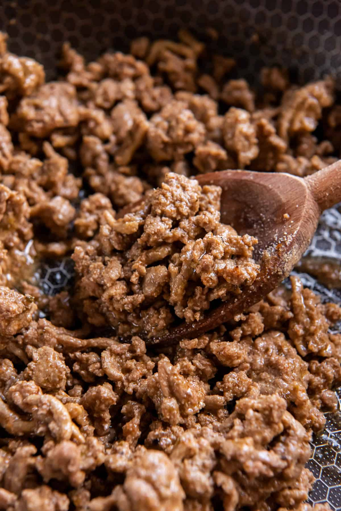

Ground Turkey

Ingredients
- 93% lean ground turkey
- olive oil
- creole seasoning
- tomato paste
- lime juice
- tobasco sause
- 1 bell pepper
- 1 onion
Steps
- dice up the onion and bell pepper and put them to the side
- pour olive oil into a large pan
- place ground turkey in pan and set to medium heat
- using the creole seasoning or any seasoning you'd like, coat the ground turkey in the seasoning
- add a couple tea spoons of tabasco and lime juice
- add four table spoons of tomato paste
- with your spatula, slice and mix the ground turkey until fully cooked. You can set to high heat to speed up this process
- once fully cooked, taste the groud beef to see if you are find with the flavor. If not, add more creole seasoning, tobasco, or lime juice until you like the flavor.
- pour the diced up onion and bell pepper and mix in the pan until cooked and evenly distributed